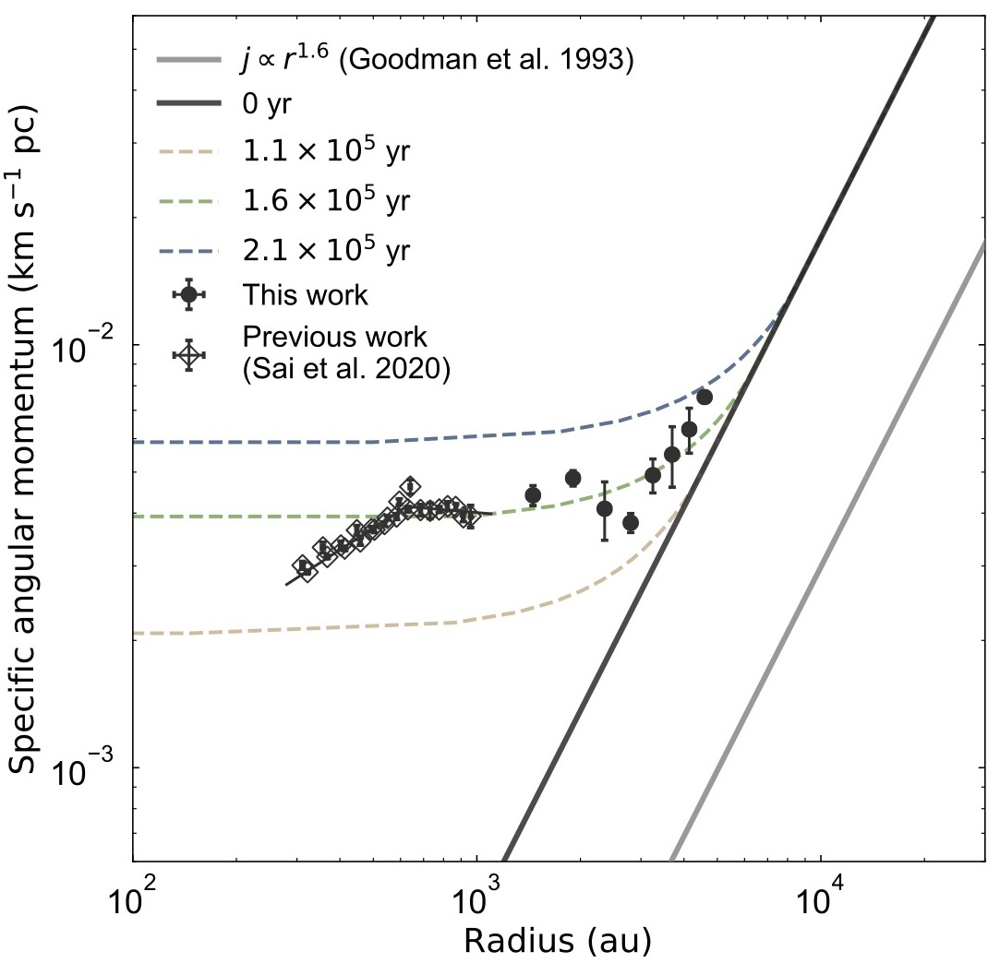

About
Hi, I am currently a PhD student in the Department of Astronomy at the University of Tokyo in Japan, and studying at Academia Sinica Institute of Astronomy and Astrophysics in Taiwan. My research interest is star and planet formation. I am particularly studying the gas kinematics around protostars with observations at (sub)millimeter wavelengths.
My study
I have been working on molecular line observations at (sub)millimeter wavelengths. Combining observations with interferometers and single-dish telescopes, I am investigating the gas kinematics around protostars over a wide-spatial-range from ~100-au disk to ~10,000-au core scales.
Warped-Disk Structure around a Protostar
 Disk Structure around the Class I Protostar L1489 IRS Revealed by ALMA: A Warped-disk System
Disk Structure around the Class I Protostar L1489 IRS Revealed by ALMA: A Warped-disk System I have observed the protostar L1489 IRS in C18O 2–1 with Atacama Large Millimeter/submillimeter Array (ALMA) in Chile, and studied the gas kinematics on ~100--1,000 au and its disk structure. I measured the rotational velocity from a velocity gradient seen in the C18O emission, and found it followed Keplerian rotation within ~600 au in radius. Because the emission shape was warped at ~200–300 au, I modeled a wapred disk using RADMC-3D to confirm the warped-disk structure.
Specific Angular Momentum Profile over a Wide-Spatial-Range
 Which Part of Dense Cores Feeds Materials to Protostars?: The Case of L1489 IRS (submitted)I have conducted observations of the protostar L1489 IRS in C18O 2–1 with the Atacama Compact Array (ACA) in Chile and the IRAM-30m telescope in Spain, and studied the gas kinematics on ~1,000–10,000 au scales. By comparing velocity structures between the observed map and disk-and-envelope models, I measured the infalling and rotational velocity of the envelope. A radial profile of the specific angular momentum is calculated from the measured rotational velocity and compared with theoretical models of core collapse to discuss the mass and angular momentum transfer history.
Contact
E-mail: jn.insa.sai_at_gmail.com (Replace _at_ with @)